![JavaFX Rich Client Programming on the NetBeans Platform - book cover]()
Now built into Java and able to integrate with the NetBeans Platform, JavaFX is today’s state-of-the-art Java-based toolkit. With JavaFX, you can create advanced user interfaces, manipulate media, generate graphical effects and animations, and much more. The NetBeans Platform provides a framework for building robust, modular applications with long life expectancies. Together JavaFX and the NetBeans Platform provide the basis for creating visually appealing, industrial-strength applications. Focusing on JavaFX as the front end for tomorrow’s most powerful rich client applications, this book covers JavaFX 8 with the NetBeans Platform, NetBeans 8, and Java 8 in its examples.
Authors: Gail Anderson, Paul Anderson. ISBN13: 978-0321927712, 600 Pages. Order online.
_cover.jpg)
If you’re a Java developer of any level using NetBeans and want to learn how to get the most out of NetBeans, then this book is for you. Learning how to utilize NetBeans will provide a firm foundation for your Java application development.
Authors: David Salter, Rhawi Dantas. ISBN13: 9781782167761, 386 Pages. Order online.

Whether a complete newbie to creating pluggable Java desktop software with the NetBeans Platform or interested in refreshing your knowledge and filling in the gaps, this is for you. The main themes of the book are modules, file systems, windows, nodes, and actions and everything in between. Start your modular development process with the best set of texts and exercises available today.
Authors: Walter Nyland and Jason Wexbridge, 366 Pages. Order online.
![Java EE and HTML5 Enterprise Application Development - book cover]()
Build and distribute business web applications that target both desktop and mobile devices. Cowritten by Java EE and NetBeans IDE experts, this book fully explains cutting-edge, highly responsive design tools and strategies. Find out how to navigate NetBeans IDE, construct HTML5 programs, employ JavaScript APIs, integrate CSS and WebSockets, and handle security.
Authors: John Brock, Arun Gupta, Geertjan Wielenga. ISBN13: 978-0071823098, 176 Pages. Order online.

Learn NetBeans IDE in an instant! A short, fast, focused guide delivering immediate results. Explore the drag-and-drop features of NetBeans IDE to write bug-free code. Generate code snippets and files with only a few clicks.
Author: Atul Palandurkar. ISBN13: 9781782163442, 70 Pages. Order online.

NetBeans has many features that greatly simplify PHP development, and with its several features and great flexibility, PHP developers can become overwhelmed by the IDE's options. This book provides step-by-step instructions that show you how to take control of the environment and make use of these features to make your PHP application development more efficient and productive than ever before.
Author: M A Hossain Tonu. ISBN13: 9781849515801, 302 Pages. Order online.

The Definitive Guide to NetBeans™ Platform 7 is a thorough and definitive introduction to the NetBeans Platform, covering all its major APIs in detail, with relevant code examples used throughout. All NetBeans Platform developers will be interested in purchasing it, because several topics in the book have not been documented anywhere else. The book is a valuable source for any Java Swing developer who writes large well-constructed applications, and Java developers interested in modularity and the architecture of distributed applications.
Author: Heiko Böck. ISBN13: 978-1-4302-4101-0 , 592 Pages. Order online.
Die NetBeans Platform 7 bietet Ihnen die optimale Umgebung für die Entwicklung von Rich-Client-Anwendungen mit Java. Dieses Werk vermittelt Ihnen von den Grundlagen bis zur ausgereiften Anwendung alles Wissenswerte, um professionelle Rich-Client-Anwendungen mit der NetBeans Platform entwickeln zu können.
Author: Heiko Böck. ISBN: 978-3836217316, 670 Pages. Order online.
"Java EE 6 Development with NetBeans 7" takes you through the most important parts of Java EE programming and shows you how to use the features of NetBeans that will improve your development experience with clear, careful instructions and screenshots. It will show you how to use NetBeans functionality to automate many of the tedious or repetitive tasks frequently encountered when developing enterprise Java applications, freeing you up to focus on the business logic specific parts of the application.
Author: David Heffelfinger. ISBN: 978-1-84951-270-1, 392 Pages. Order online.
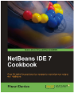
With this book you will learn in a step-by-step manner and build solutions from the ground up using NetBeans. Each recipe is well illustrated and the code contained in the examples is very engaging and will allow developers to build functional and fun software while learning how the IDE can help them with their tasks.
Author: Rhawi Dantas. ISBN: 978-1-84951-250-3, 308 Pages. Order online.
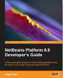
This Guide helps you to create robust Swing applications by providing an in-depth coverage of all the features of the powerful NetBeans Platform 6.9. The step-by-step example-driven tutorials are designed to be worked through chapter-wise by developers who are comfortable with Java and Swing. Zero knowledge of the NetBeans Platform is assumed. You'll be learning with the help of example code and screenshots that will ensure easier understanding. At the end, you will have developed a complete application on top of the NetBeans Platform. This book is the English community translation by leaders of the NetBeans community of the German Developer's Notebook on the NetBeans platform.
Author: Jürgen Petri. ISBN: 978-1-849511-76-6, 250 Pages. Order online.
A comprehensive guide for all learning levels about the NetBeans IDE, from working with the tool to the basics and mechanisms of Java and object oriented programming. Includes access to downloads of sample programs.
Author: 相生拓未. ISBN: 4798026654, 390 Pages. Order online.
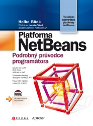
Kniha obsahuje podrobný popis filosofie a struktury NetBeans platformy a
naučí vás vytvořit rich client aplikaci s využitím jejích modulů.
Programátor se nestará o technickou infrastrukturu, ale jen o svůj problém.
After the original German book on which this title is based
was well received, the NetBeans Platform Community
has put together first an English, and now also this Czech translation.
Authors: Heiko Böck. ISBN: 978-80-251-3116-9, 320 Pages. Order online.
The study guide for the Sun Certified Specialist for NetBeans IDE Exam (310-045) covers all the official exam objectives and question formats.
Authors: Robert Liguori, Ryan Cuprak. ISBN: 978-0071738804 . Order online.
The Definitive Guide to NetBeans™ Platform 6.5 is a thorough and definitive introduction to the NetBeans Platform, covering all its major APIs in detail, with relevant code examples used throughout. All NetBeans Platform developers will be interested in purchasing it, because several topics in the book have not been documented anywhere else. The book is a valuable source for any Java Swing developer who writes large well-constructed applications, and Java developers interested in modularity and the architecture of distributed applications.
After the original German book on which this title is based was well received, the NetBeans Platform Community has put together this English translation, which author Heiko Böck updated to cover the latest NetBeans Platform 6.5 APIs. With an introduction by known NetBeans Platform experts Jaroslav Tulach, Tim Boudreau, and Geertjan Wielenga, this is the most up-to-date book on this topic at the moment.
Authors: Heiko Böck. ISBN: 978-1-4302-2417-4, 450 Pages. Order online.
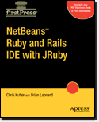
NetBeans™ Ruby and Rails IDE with JRuby is for Ruby and Rails programmers who want to take advantage of the NetBeans IDE to facilitate their Ruby and/or Rails web application development. The book provides developers with in–depth information for configuring the working environment for their specific Ruby interpreter, application server, and database server. The book also showcases the NetBeans features that enhance productivity from project creation, to editing, debugging, and testing.
Authors: Chris Kutler & Brian Leonard. ISBN: 1430216360, 125 Pages. Order online from Apress.
100 configuration and usage tips that were collected from NetBeans documentation, blogs, forums, and the NetBeans community. This book is available as an eBook. More...
Author: Ruth Kusterer. ISBN: 978-0-13-701181-0, 170 Pages. Order online.
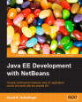
This book shows how you develop professional enterprise Java EE applications quickly and easily using the NetBeans IDE. Use the NetBeans IDE to automate tedious or repetitive tasks learn to make the most of the NetBeans Visual Web designer. The book covers the major Java EE APIs such as JSF, EJB 3 and JPAo and more.
Author: David Heffelfinger. ISBN: 978-1-847195-46-3, 408 Pages. Order online (book and ebook).
This is the Chinese translation of the well-known book "Rich Client Programming: Plugging into the NetBeans Platform".
Authors: Tim Boudreau; Jaroslav Tulach; Geertjan Wielenga. Translator: Liang Ye. ISBN: 978-7-302182-03-0, 455 Pages. Order online.
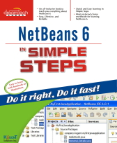
A simple yet innovative approach to the advanced concepts of NetBeans IDE 6.0. Each concept is explained step by step and further supported by numerous easy to understand practical examples.
Authors: Kogent Solutions, Inc. 245 Pages. Order online.
This textbook introduces the NetBeans IDE 6 simplified Chinese edition. It covers standard Java application development, web application development, mobile development, enterprise application development, UML modelling, SOA applications, C/C++ devlopment; JUnit testing, profiling, NetBeans plug-in module and NetBeans platform development.
Author: Liu Bin. ISBN: 9787121063206, 632 Pages. Order online.
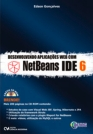
This book describes web application development with focus on the NetBeans IDE 6 as a professional Java EE 5 development tool. Among other things it covers web applications (Servlets and JSP), frameworks (Struts and JavaServer Faces), Spring, Hibernate, JPA, EJB 3, Web Services, Visual Web JSF, AJAX, and JRuby/Ruby on Rails 2. Each topic comes complete with step-by-step examples.
Author: Edson Gonçalves. ISBN: 9788573936742, 608 Pages. Order online.

Pro NetBeans IDE 6 Rich Client Platform Edition is the second Apress book to cover the agile, open source NetBeans IDE platform. But the focus of this book is on enabling you to rapidly develop Java front ends of applications using API buttons, functions, and features mostly based in the Java SE 6 platform.
Use any of the Java Swing and other desktop Java graphical user interface (GUI) APIs available in Java SE 6 or prior; build web-based application front ends with rich client platform features available in NetBeans; use web-tier development plug-ins including JSF, Struts Action Framework 2.0, and JRuby for bringing the Ruby on Rails feature set to Java.
Author: Adam Myatt, with Brian Leonard and Geertjan Wielenga. ISBN: 1590598954, 450 Pages. Order online. Sample: Download Chapter 1 (free PDF).
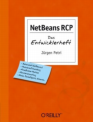
A compact guide to Rich Client Platform development with the NetBeans IDE 6 in German. An English translation is available.
Authors: Jürgen Petri. ISBN: 978-3897217249, 288 Pages. Order online.
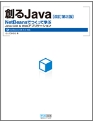
Author: きしだなおき (Naoki Kishida). ISBN: 978-4-8399-2681-6, 664 pages. Order online at amazon.co.jp or book.mycom.co.jp.
This book is for enterprise developers and architects interested in using NetBeans IDE and OpenESB tools to build their SOA based applications. Understand various SOA tools available as part of the NetBeans IDE to build an enterprise-grade, scalable application in a short period using a single development interface.
This book introduces basic SOA concepts and shows how you can use NetBeans and OpenESB tools to design and deploy composite applications. After introducing the SOA concepts, you are introduced to various NetBeans Editors and aids that you need to understand and work with for designing a composite application. For example you are introduced to a WSDL editor before dealing with web services. The last part of the book deals with a full-fledged incremental example on how you can build a complex composite application with key screenshots accompanied by the source code available on the website.
Authors: Frank Jennings, David Salter. ISBN: 978-1-847192-62-2, 200 Pages. Order online
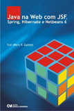
This book introduces you to the most recent and powerful tools for Java Web Application development. Topics include JSF, Facades, DAOs, Spring, JPA, Hibernate, junit testing. With real-world sample applications.
Author: Yuri Marx P. Gomes, 192 Pages. Order online.
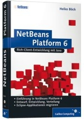
Covering the NetBeans Platform 6.0 APIs (Lookup, Visual Library and Nodes API), the module system, components, internationalization, actions, data management and representation, persistence (JavaDB, Hibernate and Persistence API), and new Java 6 features. Also includes samples and migration tips for Eclipse users.
Author: Heiko Böck. ISBN: 978-3836210669, 400 Pages. Order online.
NetBeans.org readers can download the sample chapter "Das Lookup-Konzept". (German Only.)
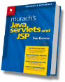
This book covers the techniques that you need to build professional Java web applications: How to install and use Tomcat as a web server and NetBeans as an IDE; how and when to use JavaServer Pages and Java servlets to build well-structured web applications that implement the MVC pattern; how to use sessions, cookies, JavaBeans, Expression Language (EL), the JSP Standard Tag Library (JSTL), and custom tags; how to use JDBC and connection pooling to work with a MySQL database; how to use JavaMail, SSL/TLS, authentication, listeners, and filters.
Authors: Andrea Steelman, Joel Murach. ISBN: 978-1-890774-44-8, 720 Pages. Order online.
Download netbeans-ready source code (ZIP archive).

The open-source NetBeans Platform is an extraordinarily powerful framework for building "write once, run anywhere" rich client applications. This comprehensive guide to rich client development on the NetBeans Platform was written for Java developers and architects who have discovered that basic Swing components are not enough for them. This book will help you get started with NetBeans module development, master NetBeans' key APIs, and learn proven techniques for building reliable desktop software. Each chapter is filled with practical, step-by-step instructions for creating complete rich client applications on top of the NetBeans Platform and plugins for NetBeans IDE. Sample chapter and table of contents.
Authors: Tim Boudreau, Jaroslav Tulach, and Geertjan Wielenga. ISBN: 9780132354806, 640 pages. Order online. (Rough Cut)

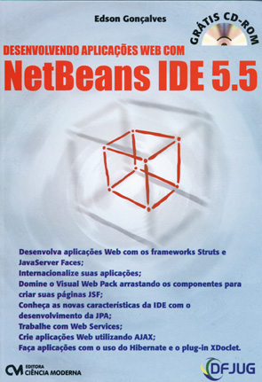
This book describes the development Web and functionality of the NetBeans IDE 5.5, with focus on using it as a professional Java EE 5 software development. It covers diverse topics such as web applications (Servlets and JSP), frameworks (Struts and JavaServer Faces), web services, Visual Web Pack, AJAX, and Hibernate, with step-by-step examples.
Author: Edson Gonçalves. ISBN: 9788573935790, 592 Pages. Order online.
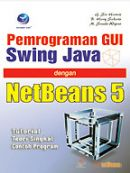
The book covers Swing GUI programming using NetBeans IDE 5.0 and 5.5.
Topics: Basic Swing GUI programming, including Swing architecture, look
and feel, event dispatching thread, features like mnemonics, AudioClip
and sampled-audio, ImageIcon, animation, model property of Swing
components, layout managers, visual GUI JavaBeans, basic database
programming, displaying data in a JTable, Swing components. All
tutorials are implemented with NetBeans IDE 5.0 and 5.5, example code
is provided for every chapter.
It also covers the basics of the NetBeans IDE source editor, Matisse
GUI Builder, and any features useful for building a GUI application
using NetBeans IDE.
Authors: G. Sri Hartati, B. Herry Suharto, M. Soesilo Wijono. ISBN: 979-763-646-1, 656 + xxi. Pages. Order online.

This book is a detailed tutorial on the NetBeans IDE, with a lot of examples on how to develop various kind of applications with the IDE. The version used in this book is NetBeans 5.0, and the CD bundled with the book provides the NetBeans installation binaries.
Part I of the book gives an overall introduction to the NetBeans IDE and various components. Part II of the book focuses on SWING/JFC development with NetBeans. Part III of the book focuses on web application development with NetBeans and Tomcat. Part IV of the book focuses on developing Java EE applications with NetBeans. Part V of the book focuses on Ant, JUnit, Profiler, and migrating from Eclipse to NetBeans
Authors: Ya Feng Wu, Xin Lei Wang. ISBN: 978-7-115-13837-8, 587 Pages. Order online.

Author: By Jiang Fei Zhan. ISBN: 978-7-121-03303-8, 525 pages.
The second edition of the NetBeans IDE Field Guide includes all of the areas covered in the first edition, but updated for NetBeans IDE 5.0. In addition, there is new content covering Project Matisse, the new CVS support, new editing features, module development, developing with web frameworks, performance profiling, and developer collaboration tools. The NetBeans IDE Field Guide was the sixth most-sold book at the JavaOne 2007 conference book store. Have a look at sample chapters and an interview with one of the authors here.
Order this book from Amazon.com.
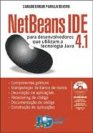
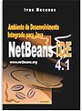

This book explores Java EE 6 and systematically illustrates its various specifications with plenty of real world examples with complete code spec and diagrams to make it easier to follow. Whether you are a beginner or an experienced Enterprise developer, you should find this book, a valuable and accessible knowledge base for creating Enterprise solutions. It covers NetBeans IDE 6.8, Sun Glassfish Enterprise Server v3, Java EE 6, MySQL 5, Java Servlets 3.0, JavaServer Pages 2.1, JavaServer Faces 2.0, Enterprise JavaBeans 3.1, Struts 2, and much more.
Authors: Sharanam Shah, Vaishali Shah. ISBN: 978-81-8404-939-8. Buy online and read sample chapters and TOC.
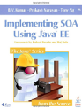
This book brings together all the practical insight you need to successfully architect enterprise solutions and implement them using SOA and Java EE technologies. Writing for senior IT developers, strategists, and enterprise architects, the authors cover everything from concepts to implementation, requirements to tools. The book concludes with a section-length case study that walks through analyzing a company’s requirements, creating an effective SOA architecture, and building a concise proof-of-concept prototype with NetBeans IDE.
Authors: Dr. B. V. Kumar, Prakash Narayan, Tony Ng. ISBN: 978-0321492159, 384 Pages. Order online.
Get the real world knowledge and code you need to develop lean but still maintainable Java EE 5 / 6 applications. Adam Bien's latest book "Real World Java EE Patterns - Rethinking Best Practices" guides you to efficient patterns and best practices in a structured way, with real world code. All samples work with Glassfish v2-v3 and Netbeans 6.5+ (but are not dependent on it). Bookmark this page: Adam will make all sample projects available from his javaee-patterns Kenai project.
Author: Adam Bien. ISBN: 978-0-557-07832-5, 279 pages. Order online.
How to create web applications with the Ruby on Rails development framework and the NetBeans IDE.
Author: Kuroda Tsutomu (黒田 努). ISBN: 978-4798116792, 384 Pages. Order online.

Das vorliegende Buch beschreibt wie in Java ein kleines Content-Management-System mithilfe von JSPs, Servlets und db4o erstellt werden kann. Aus dem Inhalt: Ideen zu einem objektorientierten Datenbankentwurf, Abfragekonzepte, Client-Server-Modus und Embedded-Modus, Transaktionen, Einstieg in J2EE mit JSPs, Servlets, Filter und Listener. More...
Download this book as PDF file; download NetBeans-ready sample projects.
Author: Ina Brenner. ISBN: 978-3837001716, 336 Pages. Order online.
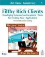
These applications are so graphically rich that you want to tell your friends about it. When was the last time you enjoyed using a software application? Maybe you need more Filthy Rich Clients in your life!
Filthy Rich Clients shows you how to enhance your applications with cool visual effects ranging from fundamental Java 2D images and Swing GUIs to advanced graphics and animations. Sample code with performant algorithms is of course included. More...
Download NetBeans-ready sample projects.
Authors: Chet Haase, Romain Guy. ISBN: 978-0132413930, 608 Pages. Order online.
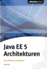
The EJB 3 spec has drastically simplified the Java EE development. But on the other hand, additional concepts like interceptors, inheritance in the persistence layer, detaching/attaching of transient objects introduce not only additional possibilities and shortcuts, but also pitfalls.
This book explains the most important EJB 3, architectures, patterns, hacks, approaches and discusses which concepts from the "legacy" EJB 2 world are still useful. The domain driven design is covered as well as service-oriented architectures.
Download NetBeans-ready sample projects from the p4j5 project page.
Author: Adam Bien. ISBN: 978-3939084242, 230 Pages. Order online.
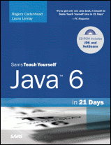
In just 21 days, you can acquire the knowledge and skills necessary
to develop three kinds of programs with Java: Desktop applications on
your
personal computer, servlets on a web server, and browser-launched Java
Web Start
applications. No previous programming experience required. By following
the 21 carefully organized lessons in this book, anyone can learn the
basics of Java programming. (From Book Cover.) CD-ROM includes
NetBeans 5.5.
Authors: Rogers Cadenhead, Laura Lemay. Order
online.
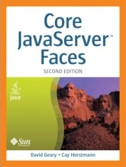
The second edition's extensive new coverage includes: JSF 1.2's
improved alignment with the broader Java EE 5 platform; enhancements to
the JSF APIs; controlling Web flow with Shale; and using Facelets to
replace JSP with XHTML markup. The authors also introduce Ajax
development with JSF—from real-time validation and Direct Web Remoting
to wrapping Ajax in JSF components and using the popular Ajax4jsf
framework.
Sample code and NetBeans projects are available at horstmann.com.
Authors: David Geary, Cay Horstmann. ISBN: 978-0131738867, 752 pages. Order online.
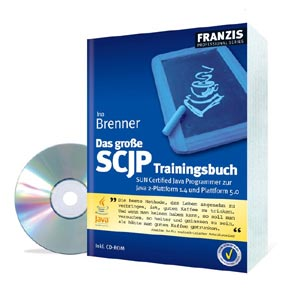
Prüfungsvorbereitung für den Kurs "Sun Certified Java Programmer (SCJP)". Die gedruckte Ausgabe erschien im Franzis-Verlag und wurde unter Verwendung der NetBeans IDE überarbeitet und um kommentierte Lösungen, zwei Abschlussklausuren und mehrere Kapitel ergänzt! More...
Download this book as PDF file.
Author: Ina Brenner. ISBN: 978-3772370298, 736 Pages. Order online.
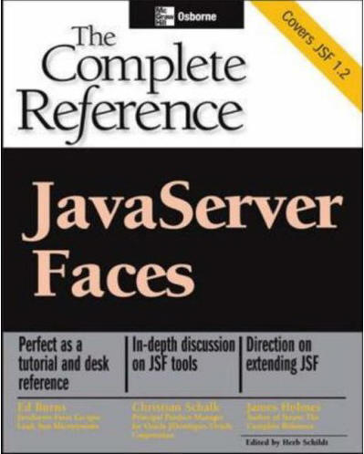
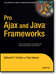
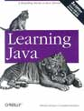
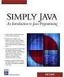
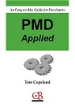
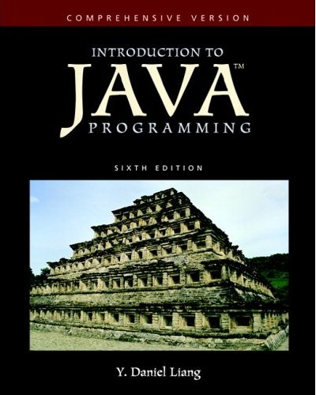
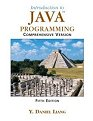
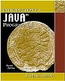
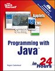
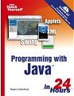
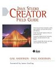